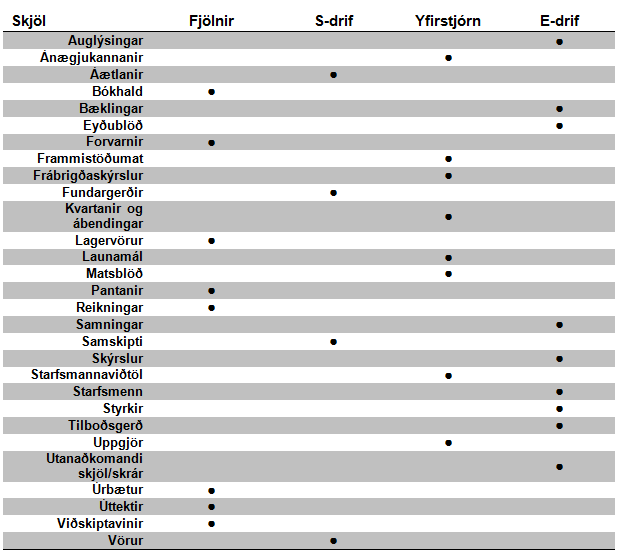

Staðallinn gerir kröfu um að koma á skýru ferli við uppfærslu ferla, skráningu og samþættingu þeirra.
Þessi gæðahandbók setur bæði fram þá lykil- og stoðferla. Samþætting þeirra er gerð aðgengileg og sýnileg. Uppfæring ferlana á sér stað einu sinni á ári eða eftir þörfum. Uppfærður ferill er samþykktur og auðkenndur með undirritun stjórnarformanns og dagsetningu undirritunar.
Staðallinn gerir kröfu um að koma á og viðhalda gæðahandbók sem nær yfir umfang gæðastjórnunarkerfisins.
Gæðahandbók þessi innheldur samþætta verkferla, gæðastefnu og markmið, verklagsreglur og annað sem nær yfir umfang gæðastjórnunarkerfið.
Staðallinn gerir kröfu um að virk skjalastýring sé til staðar og til séu verklagsreglur sem tilgreina meðal annars merkingu og vistun skráa. Uppfæring á skjölum séu auðkennd til tryggja að rétt skjal sé í notkun og aðgengi nauðsynlegra skjala sé tryggt.
Gæðahandbók þessi inniheldur verklagsreglur um skjalastýringu og stýringu skráa sem uppfylla þær kröfur sem staðallinn gerir til að tryggja að nauðsynleg skjöl séu ávallt aðgengileg og starfsmenn séu meðvitaðir um vistun þeirra.
Til að gera skjöl auðþekkjanleg og endurheimt þeirra sé sem skilvirkust skulu þau vera með lýsandi merkingu. Skjöl skulu vera stofnuð með sniðinu:
[Fyrstu þrír stafir í vörumerki]_[vöruheiti]
Seb_shape
stendur fyrir skjöl þar sem vörumerki er Sebastian og vöruheitið er Shape
Ef ofangreint snið hentar ekki stofnun nýs skjals skal hafa samband við deildarstjóra og/eða móttökustjóra því það er í hlutverki þeirra að ákvarða merkingar og halda utan um skjölin.
Þau skjöl sem koma frá deildarstjóra og merkjastjóra þarfnast yfirferðar og samþykktar af framkvæmdastjóra áður en þau eru gefin út eru kvörtun, beiðni um verðbreytingar eða önnur mikilvæg mál.
Eyðublöð og önnur skjöl eru uppfærð reglulega. Til dæmis eru pöntunarblöð uppfærð eftir því sem að nýjar vörur bætast inn í viðkomandi línur eða ef verðbreytingar eiga sér stað og þau auðkennd með nýrri útgáfu dagsetningu. Eftir að uppfæring hefur átt sér stað fer framkvæmdastjóri yfir skjalið og samþykkir. Ný útgáfa er gerð aðgengileg fyrir þá starfsmenn og viðskiptavinir fá tilkynningu með tölvupósti um að breytingarnar taki gildi eigi seinna en tveimur vikum eftir tilkynningu.
Þau skjöl sem verða til innan fyrirtækisins skulu vera vistuð eftir töflunni hér að framan. Utanaðkomandi skjöl sem eru nauðsynleg fyrirtækinu eru merkt og vistuð hjá viðkomandi deild.
Til að koma í veg fyrir uppsöfnuð úrelt skjöl á drifum er tiltekt regluleg. Til er rafræn áætlun sem miðar að því að tiltekt eigi sér stað einu sinni á ári eða oftar eftir þörfum. Fjármálastjóri og kerfisstjóri sjá um tiltekt í kerfum og á drifum. Fyrirfram er ákveðið hvenær tiltekt á sér stað og sú deild fær tilkynningu með tölvupósti. Með því fá starfsmenn tækifæri á að vera bæði þátttakendur í tiltektinni og að varðveita þau skjöl sem er þeim mikilvæg.
Skjöl eru vistuð eftir töflunni hér að neðan. Utanaðkomandi skjöl sem eru nauðsynleg fyrirtækinu eru merkt og vistuð hjá viðkomandi deild.
